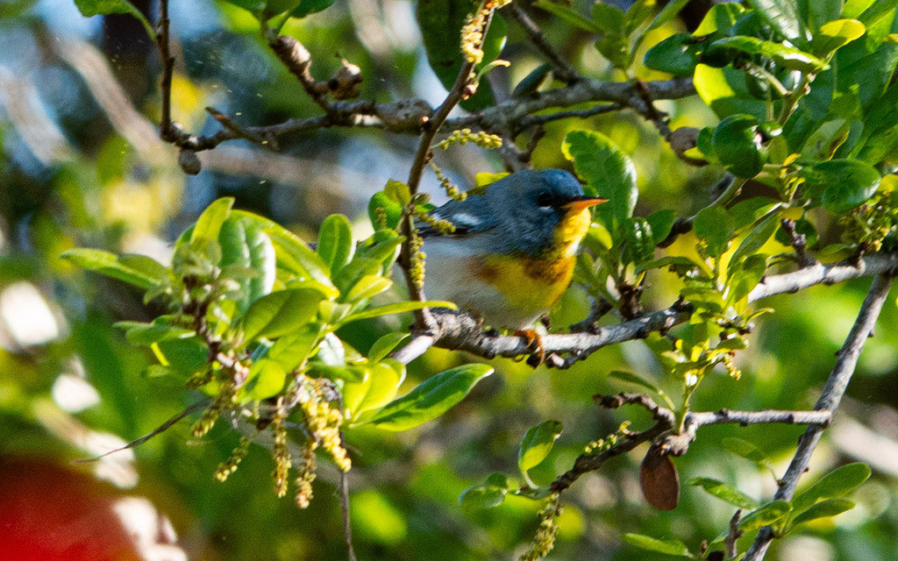

- A tiny, jewel-toned warbler — blue-gray above with a bright yellow throat and breast, a yellow-green patch on the back, bold white eye crescents, and a distinctive chestnut-and-black breast band most vivid on adult males.
- Its nest is an architectural marvel: the female burrows into a hanging clump of Spanish moss, hollows out a chamber from the inside, and lines it with fine grass and hair — a hidden pouch invisible from below.
- It forages acrobatically, often hanging upside down at the very tips of branches to snatch caterpillars and spiders tucked beneath leaves — a trick shared by few other warblers.
- Its song is instantly recognizable: a rising, accelerating buzzy trill that pinches off with a sharp zip at the end — often described as sounding like a tiny zipper being yanked open.
A hyperactive, canopy-loving warbler roughly 4.3 to 4.7 inches long. Blue-gray above with a mossy-green back patch, two white wing bars, a bright yellow throat and breast, a white belly, and broken white eye crescents. Adult males wear a sharp chestnut-and-black breast band; females and immatures are paler and may lack the band entirely.
In fall and winter look for the telltale broken white eye crescents, which persist even on dull non-breeding birds. In spring, listen for the bzzzzz-zip song from the live oak canopy — a singing male is often easier to hear than to see. During migration, birds can drop lower into the mid-story, giving better looks than their usual treetop haunts.
The signature song is a rising, buzzy trill that accelerates and pinches off with a sharp, abrupt zip — often rendered as bzzzzz-zip and likened to a miniature zipper. A second song type consists of two or more bouts of buzzy notes separated by brief pauses. Both sexes give a sharp chip call while foraging or during aggressive interactions.
Scan the mid-to-upper canopy of live oaks and other mature trees, especially where Spanish moss is draped. Watch for a very small, restless bird fluttering at branch tips or hanging upside down to glean insects. The broken white eye crescents are the most reliable field mark in all plumages — no other eastern warbler combines them with yellow underparts and a blue-gray back.
Primarily insects and spiders, including caterpillars, beetles, flies, ants, and scale insects gleaned from leaves and branch tips. On wintering grounds the diet occasionally includes small berries, seeds, or nectar.
Focus on the mid-to-upper canopy of the park's mature live oaks, particularly where Spanish moss grows in abundance near the wetland margins and shaded hammocks. Listen for the bzzzzz-zip song first — the bird is usually easier to hear than to see. Bring binoculars and be prepared for "warbler neck"; they rarely come low.
Present in the Bradenton area primarily from October through April as a migrant and winter visitor. Peak activity occurs during fall migration (September to October) and spring migration (March to April), when birds are most numerous and males are most vocal. Winter residents can be found quietly foraging through the canopy on any cool morning from November through February.
Observe and enjoy.

- © Rob Carr (CC-BY-NC), via iNaturalist